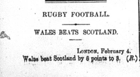
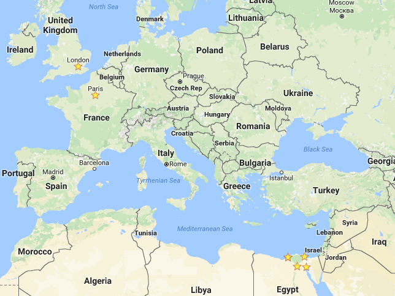

For my project I have decided to look into the sports that took place in 1905.

So far in my week of newspaper articles I have only read about rugby football being played in London between Wales and Scotland, but I am sure that there is more going on than just that throughout the entire year of 1905. In the article about the game, all that they included was the date of the game, who played, the location, and the score. I would like to figure out all of the sports that they played, where they played them, how they organized them, how big the fan base for these sports were, and how competitive the games between teams were. The answers to these questions can give us a vast insight into what their society was like. The best part is that the answers to all of these questions can be found within the text of this newspaper. You may be wondering how finding out information about sports will give us any insight into what it was like back then. Well, for starters it will show us how the world functioned, what people care about, how they spend their free time, where popular places to live were, and how influential sports were to the people back then.

For example, our society today is very sports oriented. There are a very large amount of die hard fans for collegiate and professional sports programs. People who dress up like their team’s mascot and are proud to walk around like that. The players on these big football, basketball, soccer, hockey, and baseball teams are praised and treated like gods, getting paid millions and millions of dollars to perform out on the field and do what they love. People are very passionate about their teams and will pay lots of money to see them succeed. Besides all of the money and pride that goes along with sports today, a lot of small talk and conversation starters are about the games that are being played on television that day. Some long term friendships are made off of a simple “Hey, did you see the dolphins game last night? They played better than ever.” Before you know it the two are keeping in constant contact with each other about football, then eventually it leads to a deeper friendship that they never say coming. If I could find out what sports meant to these people back in 1905, we could figure out additional information about what it was like to live back then. The information found could also be used to find out how much income people made off of sports. It will be interesting to see if sports and large amount of money went hand in hand back then like they do now. The other questions such as where they played, and how competitive the games were are also very important. If we find out where most of the games take place, or where they hold the championship games for every sport, then we could possibly find out what the sports capital of 1905 was. The sports capital would probably have a higher population, which means that more money would be flowing through that town, therefore it would probably be one of the more affluent places to live.Do you now see how much information we can squeeze about these basic questions involving sports? We can take this information, along with all of the other information from my classmates, and use it to help us get a better grasp on their society. Eventually we will have a much greater understanding of Alexandria in 1905, which is our overall goal in this class.
In order to find out this information, I gathered all of the data that students
in this class have created, made them into one big project, and searched all of the xml files for keywords like “football”, “sport”, “rugby”, and “score” through the XPath query box using //div[@type="item"][contains(., 'cotton')]. These key words led me to passages talking about a variety of different sports and events.
After going through multiple pages of text, I have found a significant list of
sports that were played or observed back in 1905. We have no way of knowing
for sure that these are the only sport that went on and that were cared for back
then. These are only the sports that were listed and talked about in the 1905
edition of the Egyptian Gazette. The list includes, but is not limited to, rugby,
football, soccer, racing, hunting, shooting, cricket, running, rowing, swimming,
tennis, golf, and horse races. From what I can tell, the most popular sports are
football, soccer, and various types of races.
The writer of the newspaper usually posts an article that includes the time of kick off, location of the game, teams competing, and projected quality of the game, based on their past games played that season and which of their players is injured that week, a couple of days before the game is played. Another event they host that was written about in the newspapers is football tournaments. I have read about a multitude of tournaments between teams. They also write about the game after it has been played. They give a very in depth description of several aspects of the game. For example, I have seen them include the conditions of the field that day, which includes what the weather was like, what the ground they were playing on was made out of, and other little things like that. Also they include the number of spectators that attended the game, which is roughly 150 at most of their more important sports, who won the coin toss, who scored the goals, and even who the referee of the game that day was. The location of these games varied from Cairo, to London, to Port Said, to Boulac, and more. The Football Cup Finals were hosted in London, which makes me believe that London was one of the premier places to live in 1905. As for the competitiveness of these games, it was back then just how it is now. Some games would be a blowout where from the beginning you knew who would take home the trophy, while others you know are going to be very evenly matched and competitive. While going through all of this information, I read a couple cases about football teams getting plays put on just for them in theaters, which is not the same as being praised everywhere you go, but it is still considered a special treatment that normal citizens do not receive
One aspect of their sporting world that I was quite surprised by was the amount of teams made up by random groups of people. They had a Military team, Boulac railway institute team, Port Said team, E.T.C Suez team, Wales team, Scotland team, A.S.C team, Railway men team, and they even had teams made up of just natives to practice against. In our sports world today most of the teams that play each other are categorized by schools, cities, states, or even countries in some cases, and these teams seem like there is no level of organization of who gets to create a team and who plays who. Teams like Wales, Scotland, and Port Said sound normal to me and then I see teams like the Railway men, Boulac Railway institute, and then the team made up of natives to play a team for their season opener. This also makes it very hard to see who the big rivalries are between. For examples, in 2016 we know that Florida State, University of Florida, and University of Miami are all going to be rivals because they are all very talented and located in the same state. Another part of 1905 that surprised me was the Helouan Sporting Club hosting Horse racing tournaments. I do not know why this surprised me, due to the combination of the large amount of horses used back then and strong love most males have for gambling. I just did not see Horse races being a very popular thing to go watch, because you see horses all around you every day.
Over the course of this project I faced many difficulties. Some of them I still have not fully figured out, which may be somewhat problematic. For example, they talk about the sport football a lot in this newspaper. As you probably know, football has two different meanings. They could either be talking about American football, which is what the NFL and college football are, or they could be talking about football, meaning soccer. At some points in the text it is obvious that they are describing a soccer match, but at others it is impossible to tell. American Football was invented back way back in 1869 and soccer was created way before that, then there is also rugby which is like a hybrid of the two that was made in 1823. I am assuming that most, if not all of the time they are referring to soccer or rugby whenever they say football, but I do not know for sure.
In conclusion, from this research I have learned that their most popular sport was football, also known as soccer by many. There was a good amount of competition at these games, and there was also a good sized crowd of people attending them. The players back then were not treated as godly as the players nowadays are treated, but they still received benefits that others did not. From the looks of it, their sporting capital of 1905 was London. One thing that has not been I have not yet fully understood is how they organize their seasons. Either way, this information presented shows me that the sports in 1905 in these areas were popular, and viewed by many, but did not hold the same precedence that sports today hold.